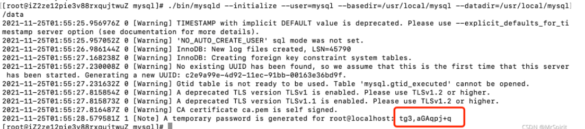

1、先彻底删除centos预装的mariadb，或者是卸载残留的MySQL
查看是否有mariadb
xxxxxxxxxx11rpm -qa | grep mariadb如果存在，就删除掉
xxxxxxxxxx31rpm -e --nodeps mariadb-libs-5.5.65-1.el7.x86_64 2// 强力删除模式，连带删除依赖3// 这个需要看看是版本是不是对应
2、查询卸载的文件残留
xxxxxxxxxx11find / -name mysql如果有，就删除
xxxxxxxxxx11rm -rf /usr/local/mysql
xxxxxxxxxx11wget https://downloads.mysql.com/archives/get/p/23/file/mysql-5.7.35-linux-glibc2.12-x86_64.tar.gz
进入/usr/local目录，所以也可以一开始就进入这个目录去下载省事
xxxxxxxxxx11cd /usr/local解压
xxxxxxxxxx41tar -zxvf mysql-5.7.35-linux-glibc2.12-x86_64.tar.gz2// 可以用tar指令指定解压后的位置3tar -zxvf 所要解压的文件名 -C 解压位置4tar -zxvf mysql-5.7.35-linux-glibc2.12-x86_64.tar.gz -C /usr/local/修改文件夹名字
xxxxxxxxxx11mv mysql-5.7.35-linux-glibc2.12-x86_64 mysql进入mysql目录
xxxxxxxxxx11cd mysql/创建data文件夹
xxxxxxxxxx11mkdir data添加mysql用户及用户组
xxxxxxxxxx41groupadd mysql2useradd -r -g mysql mysql3chown -R mysql.mysql /usr/local/mysql 4//将mysql文件夹授权给mysql用户和用户组创建mysql配置文件
如果之前有这个文件，直接更改，如果没有就创建新的
xxxxxxxxxx11vim /etc/my.cnf做如下配置
xxxxxxxxxx91[mysqld]2port=33063basedir=/usr/local/mysql4datadir=/usr/local/mysql/data5symbolic-links=06max_connections=6007default-time-zone='+08:00'8character_set_server=utf89sql_mode=STRICT_TRANS_TABLES,NO_ZERO_IN_DATE,NO_ZERO_DATE,ERROR_FOR_DIVISION_BY_ZERO,NO_ENGINE_SUBSTITUTION初始化mysql
先安装依赖
xxxxxxxxxx11yum install libaio* -y开始初始化
xxxxxxxxxx21cd /usr/local/mysql2./bin/mysqld --initialize --user=mysql --basedir=/usr/local/mysql --datadir=/usr/local/mysql/data
安装好后，会给一个初始化密码，记得保存下来
使用mysqld服务并设置开机启动
xxxxxxxxxx41cp support-files/mysql.server /etc/init.d/mysqld //添加mysqld服务2chmod 755 /etc/init.d/mysqld //服务授权3chkconfig --add mysqld //添加开机启动4chkconfig --list //查看添加的开机启动服务
启动前检查配置
xxxxxxxxxx51vim /etc/init.d/mysqld2
3// 检查配置是否如下4basedir=/usr/local/mysql5datadir=/usr/local/mysql/data
xxxxxxxxxx11service mysqld start
进入/usr/local/mysql/bin目录，执行登陆命令
xxxxxxxxxx11./mysql -u root -p输入上面保存的初始化密码
修改密码
xxxxxxxxxx21alter user 'root'@'localhost' identified by '你的密码';2flush privileges;
授权远程登陆
xxxxxxxxxx31use mysql;2GRANT ALL PRIVILEGES ON *.* TO root@"%" IDENTIFIED BY "你的密码";3flush privileges;
quit指令退出后，重启一下服务器
重启
xxxxxxxxxx11mysql service mysqld restart启动
xxxxxxxxxx11mysql service mysqld start关闭
xxxxxxxxxx11mysql service mysqld stop查看运行状态
xxxxxxxxxx11service mysqld status
编辑配置文件
xxxxxxxxxx11vi /etc/profile在最后面加上
xxxxxxxxxx11export PATH=$PATH:/usr/local/mysql/bin更新配置文件
xxxxxxxxxx11source /etc/profile之后就可以在任何地方使用mysql指令了